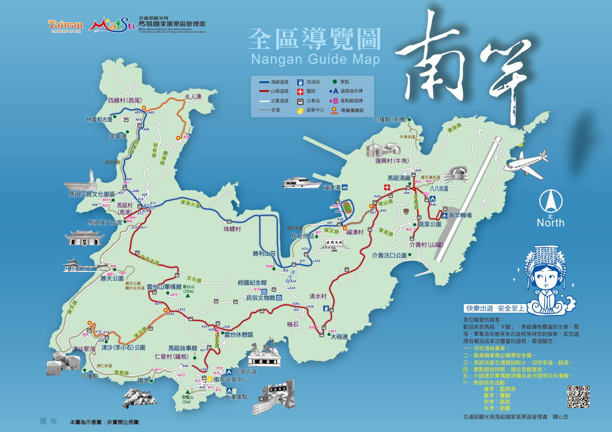

南竿風光
景點匯總
圖片來源：馬祖國家風景區
馬祖國家風景區 南竿鄉景點查詢藍色的眼淚
北海坑道夜賞藍眼淚 「藍眼淚」的誕生，是因一種會發光的夜光蟲（渦鞭毛藻），經過海浪嶼自然風吹拂驚擾，而發出淡藍色螢光，也被稱為「藍海現象」、「藍色啤酒海」。此特殊景觀更被美國CNN列為「世界15大自然奇景」，每年都吸引眾多遊客慕名前往觀賞。
每年4~9月，馬祖便進入藍眼淚季節，但由於7月中旬後海水升溫，較不易見到「爆量」盛況，因此最佳觀賞期是落在海水溫度適中的4~6月。而藍眼淚也絕非生態汙染的產物，反而是代表生態資源與水產豐富的象徵。
北海坑道
南竿北海坑道 1968年，為戰略需要而開始的「北海計畫」在馬祖地區開鑿了不少「地下碼頭」，專供游擊戰艇停泊使用，如今在軍方釋出之後，成為馬祖地區特殊的「戰地景觀」，若無造訪北海坑道，便如同沒來過馬祖。 北海坑道位處鐵板海岸線，為一深入山腹，貫穿岩壁，呈「井」字形交錯的水道，水道高18公尺，寬10公尺，長640公尺，漲潮時水位達8公尺，退潮時為4公尺，步道全長700公尺，走完一圈約需30分鐘，但要配合潮汐的漲退，在退潮時才能進入。
這座可供百餘艘登陸小艇使用的地底坑道，當年被視為高難度的工程，共出動2個師、3個步兵營、1個工兵營以及1個傾卸車連混合編為3組，不分晝夜輪流施工，歷經820個工作天才完成。當時由於施工設備簡陋，除了用炸藥爆破外，全靠人力一鑿一斧挖掘花崗岩壁而成，不少官兵因而犧牲，工程之艱鉅、氣勢之壯闊，堪稱鬼斧神工之作。在過去戰雲密佈的年代，北海坑道曾經試圖要扮演著地下碼頭的運補功能；今日當人們走進深邃的坑道中，一幕幕雄偉壯闊的岩壁、幽暗浮動的倒影，都讓遊客不自覺地發出陣陣讚嘆。